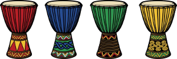
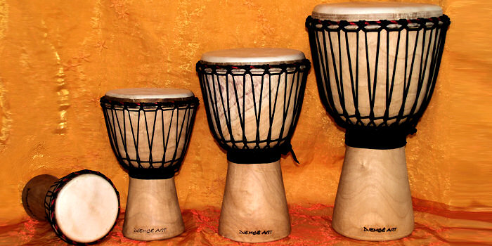
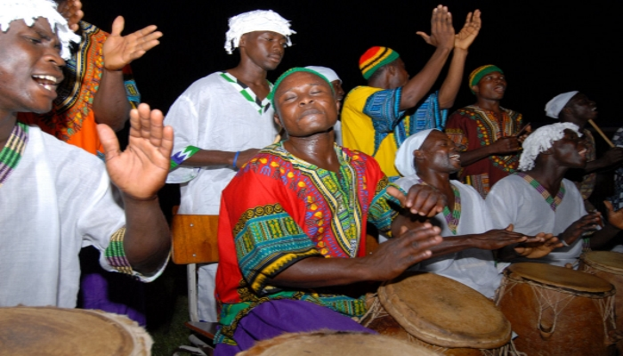

סוגי מערכות תופים :
מערכת תופים אפריקאית
יבשת אפריקה היא זו שלמעשה הביאה את התופים לעולם. המתופפים הטובים בעולם לא יכולים להיות שייכים לקטגוריית הטובים ביותר מבלי שנסעו לאפריקה ולמדו מהשבטים הדרום אפריקאים את אמנות הקצב שלהם. מה שאתם כעת שומעים ברקע היא מוסיקה אפריקאית כשהקצב של השיר מגיע מהתופים האפריקאים.
התוף הפופולארי ביותר הוא הג'מבה והוא התפתח מכלי כתישה. בעבר, התופים יוצרו על ידי נפחים, והטקסים המלווים ייצור כל תוף, מתקיימים היום כפי שהם התקיימו לפני עשרים שנים. שאר התופים התפתחו מהתוף הזה, עם שינויים מאד קלים. מה שמבדיל תוף אפריקאי מאחד לאחר הוא למעשה רק גובה הצליל.  בתמונה: תופי ג'מבה
תהליך הייצור של תופי הג'מבה הוא מסקרן במיוחד. בימי קדם, הג'מבה יוצר רק עבור שימוש אישי. נגן הג'מבה של הכפר הלך לנפח, ביקש לבנות עבורו תוף חדש ושילם תמורתו בעשרה אגוזי קולה. הנפח ראה בבקשה זו כבוד גדול. תהליך בניית התוף מלווה בטקס. בתחילת הטקס הם ילכו לראות את העץ שישמש לבניית התוף. לפני כריתת העץ הם ירקדו, ישירו ויתופפו. הנפח ומשפחתו יגישו לעץ כמנחה את עשרת אגוזי הקולה, ויסבירו לרוח העץ כי הוא העץ הנבחר וכן גם יתנצלו בפני רוח העץ על כך שצריך לכרות אותו. לאחר כריתת העץ, תגולף הצורה החיצונית הבסיסית של התוף, לאחר מכן הליבה הפנימית של העץ תרוקן מתוכן. טקס נוסף, המציין את מתן הקול לתוף הג'מבה, יתקיים מיד לאחר הגילוף הסופי של התוף ומתיחת העור על חלקו העליון (העור מגיע מאנטילופה או מעז). הטקס הסופי יתקיים בעת הניגון על התוף, כדי לתת לתוף את קולו. גם כיום, מתופפים מגישים מנחה של אגוזי קולה לתופי הג'מבה שלהם, כסגולה להצלחה בתחרות עם מתופפים מכפרים אחרים. מפתיע שגם כיום התופעה הזאת מתרחשת, אך למסורת של המתופפים האפריקאים יש כבוד בקרב קהילת המתופפים.
מבחינת נגינה על תופים אפריקאים יש מס' אפשרויות. ניתן לנגן עליהם באמצעות מקלות תיפוף, ניתן לנגן עליהן באופן ישיר באמצעות הידיים. התופים האפריקאים בניגוד למערכות האחרות לא נועדו להקלטות, שכן הצלילים שהם מפיקים שונים לחלוטין. הסאונד שלהם הוא מאד ספציפי לסגנון מסוים. בנוסף, האקוסטיות שלו מאד מגבילה אותו. לכן, בדרך כלל אם רוצים להקליט את התופים האפריקאים שמביאים איתם סגנון שונה לחלוטין – משתמשים בתופים וירטואלים אשר מדמים זאת. התופים האפריקאים קשים יחסית לתחזוקה כיוון שקשה למצוא מקומות שבהם יש תמיכה בהחלפת עורות, וגם התופים האלה באופן מאד מפתיע – יקרים. כי כמובן שכדי שיהיה סט תופים אפריקאי – צריך לקנות מס' תופים בגדלים שונים. כיום משתמשים בתופים האפריקאים בעיקר לצורך ליווי של שיר, ועל הסט במקום שינגן בן אדם אחד – מנגנים מס' בני אדם. כלומר X בני אדם מנגנים על סט תופים אפריקאים אחד.  בתמונה: הרבה אנשים על סט אפריקאי אחד.